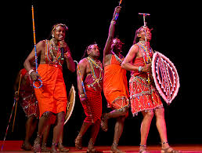
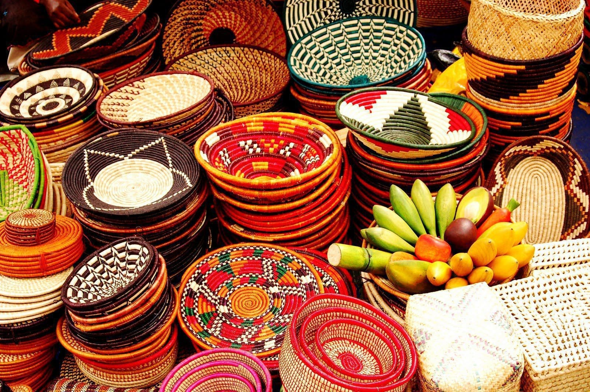

Taste the Heart of Nairobi
Explore Nairobi's unique culinary scene and vibrant cultural life.
Nyama Choma
This beloved grilled meat dish is a staple of Kenyan cuisine and a must-try when in Nairobi.

Traditional Dance
Catch cultural dance performances like the iconic Maasai jumps and drumming events in town centers.

Local Markets
From Maasai beadwork to fresh produce, explore Nairobi's colorful open-air markets for a cultural treat.